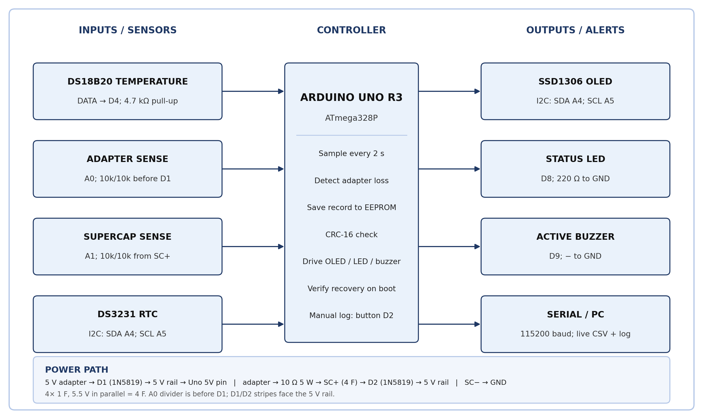

Team No.: Solo (1 member)
| Sl. | Registration No. | Name |
|---|---|---|
| 1 | BL.SC.U4CSE24212 | Dandu Surath Preetham |
Conventional sensor loggers lose the last reading when the power is interrupted. A brown-out or adapter unplug can reset the microcontroller before the current sample is written to non-volatile memory, and an interrupted write can leave a corrupt record. A simple threshold detector also cannot distinguish a genuine power failure from a temporary voltage dip. This project develops a low-cost Arduino Uno R3 logger that detects adapter loss, holds up the board with a 4 F supercapacitor bank for several seconds, saves the last temperature and timestamp to EEPROM with a CRC-16, displays the event on an OLED, and verifies the stored record when power returns.
| Component | Qty | Purpose |
|---|---|---|
| Arduino Uno R3 (ATmega328P) | 1 | Main controller; 10-bit ADC, 1 KB EEPROM |
| 1 F, 5.5 V supercapacitor | 4 | 4 F hold-up bank; 3 F minimum, 4 F recommended |
| 1N5819 Schottky diode | 2 | D1 adapter OR-ing; D2 supercapacitor OR-ing |
| 10 Ω, 5 W resistor | 1 | Limits supercapacitor charge current to about 0.5 A |
| 10 kΩ ×4, 4.7 kΩ ×1, 220 Ω ×1 | 6 | A0/A1 dividers, DS18B20 pull-up, LED current limit |
| 0.96-inch SSD1306 OLED, I²C | 1 | Local status and recovery display |
| DS18B20 temperature sensor | 1 | Temperature measurement |
| DS3231 RTC module + CR2032/LIR2032 | 1 each | Timestamp with coin-cell backup |
| LED, active buzzer, push button | 1 each | Status indication, audible alert, manual log |
| Breadboard and jumper wires | 1 set | Prototyping and connections |
| 2-pin / 4-pin terminal blocks | 2 + 2 | Supercapacitor bank connection; no-solder 4 F bank |
| 5 V, 2 A adapter + micro-USB breakout | 1 each | Primary 5 V supply and power-path input |
| USB-A to USB-B cable | 1 | Programming and serial monitor |
| Multimeter | 1 | Voltage, continuity and hold-up measurements |
Estimated build cost: ₹1,400–1,800 (indicative; excludes the Arduino Uno and multimeter already owned).

| Arduino Uno pin | Connection | Arduino Uno pin | Connection |
|---|---|---|---|
| A4 | OLED SDA and DS3231 SDA | D8 | LED via 220 Ω to GND |
| A5 | OLED SCL and DS3231 SCL | D9 | Active buzzer +; buzzer − to GND |
| D4 | DS18B20 DQ; 4.7 kΩ pull-up to 5 V | D2 | Push button to GND; INPUT_PULLUP |
| A0 | Adapter-sense divider; 10 kΩ / 10 kΩ before D1 | 5V | 5 V rail from D1/D2; not VIN |
| A1 | Supercapacitor-sense divider; 10 kΩ / 10 kΩ from SC+ | GND | Common ground |